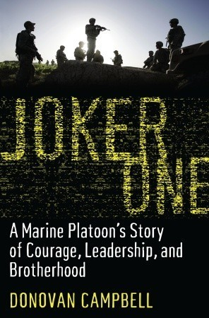

Joker One: A Marine Platoon's Story of Courage, Leadership, and Brotherhood
- Read on 2018-11-01
- Rating: ️️️️️
- Format: 🎧 (11 hours 42 minutes)
Interesting events. Not a very good book. Unfortunately, surviving life-altering circumstances while in the service of your country, doesn't necessarily make for a very well-written book. This book felt much like the author simply took his journal entries, tweaked them a bit, and put them in a book. This is in no way meant to diminish the value of the service, or my appreciation for him and other who have served, or currently serve. I'm not expecting a Black Hawk Down level of experience out of every one of these types of books, but I'd expect the book to be edited better.
- Prior: Harry Potter and the Deathly Hallows
- Next: Calamity